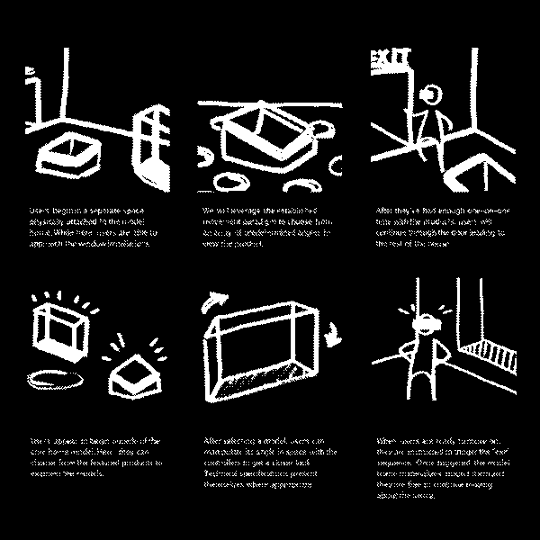

The Marvin VR experience introduces architects to windows and demonstrates their features. Architectural project managers (APM) equip participants with a headset to guide them through a model home showcasing the brand’s new Aurora and Skycove windows. Harnessing the power of easily deployable VR kits, Marvin’s new products reach architects without time consuming trips to view physical samples.

The proposed schedule consisted of six weeks for production. During this period we were responsible for furnishing the digital space, implementing an onboarding flow, and extending the UI all while user testing new builds.

Production commenced with an information transfer between INPHANTRY and IDEO, whose initial research and development created the prototype. Through their hardware recommendation the Oculus Quest was chosen to carry the experience. This particular standalone headset allows for casting a live feed of visuals, untethered by the cables and sensors found in other models and competing hardware.
Rounds of usability testing and iterative design enhancements pushed the prototype into a fully realized model home boasting Marvin’s latest window products.

As the sole UX designer, I worked with INPHANTRY's tech lead to define the onboarding process. Beginning with storyboards for potential directions, we weighed the effectiveness of proposed methods with the time constraints we were up against.

I composed a script for weekly usability testing to be carried out at a local Marvin showroom. While on site, I facilitated the architect's experience and assigned supportive roles to teammates in order to capture data.


Conducting weekly testing sessions tuned us in to how practicing architects respond to the provided interactions. I was responsible for synthesizing insights, summarizing the latest changes to the prototype, and making presentations to the client throughout the week.


In the end, architects are presented with a tool that brings them face-to-face with product models in a realistic environment. These models tout high fidelity components to scale and animations that exemplify the features described.

Team
- Abby Carlson, PM
- Kilo Thomas, Development
- Em Montoya, VO
- Dan Roeger, 3D
- Kevin Lee, Photography
- Carson Halstead, UX & Design
Reflections
This was my first job leading usability testing sessions. Shout out to Just Enough Research by Erika Hall for providing a working blueprint. I gained some insight into testing etiquette and applied that while working with people wearing a VR headset.Testing in this space introduced plenty of unique variables. Differences in height, comfort with virtual reality, and whether or not they wore glasses influenced the experience for those who took part. These nuances in test participants’ interactions left me craving more time to reflect after the fact.
Schedules allowed us a full day of testing followed by a client presentation the next afternoon. The evening of the tests and the morning of the presentation were our only spaces for analysis. Budgeting time to properly investigate findings is key and an essential part of gathering data in the first place.
I was grateful for the days an APM was on site to answer questions about technical details. Since our team was not versed on the products, having an expert on hand helped create a familiar environment for architects. This gave our team a peek at how the two might interact during a scheduled visit.
Observing APMs and architects without the VR component could inform a base understanding of strengths and struggles. Taking part in early field studies may have yielded these sorts of insights.
Client expectations and a search for genuine reactions can pose a challenge to juggle. I believe it’s important to witness the struggles experienced by those testing a developing product. I can’t assume the decisions we make are always the right ones. However it’s good to keep in mind that seeing a potential client struggle isn’t ultimately the impression you want to leave as a supplier.
In person training at Marvin headquarters was scheduled to wrap the project but was cut due to the onset of the COVID-19 pandemic.